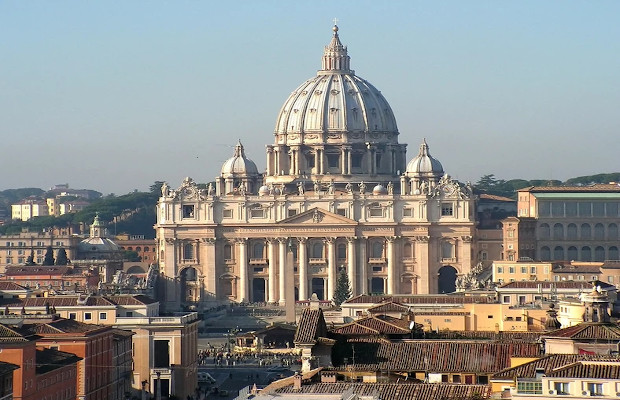
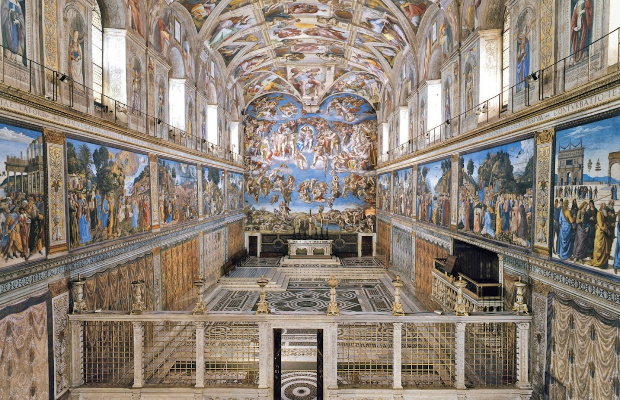
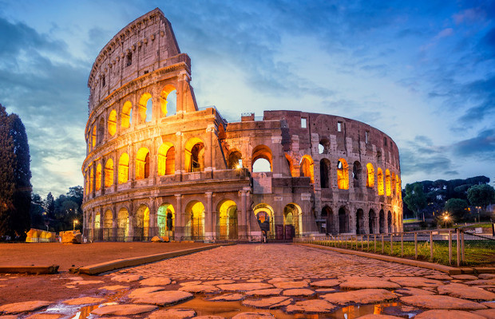
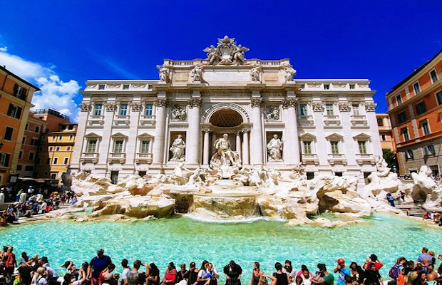
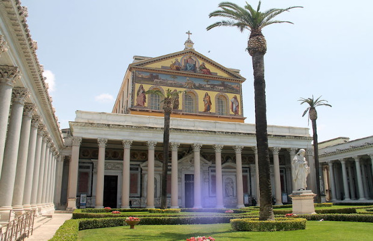
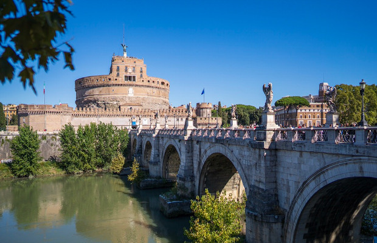
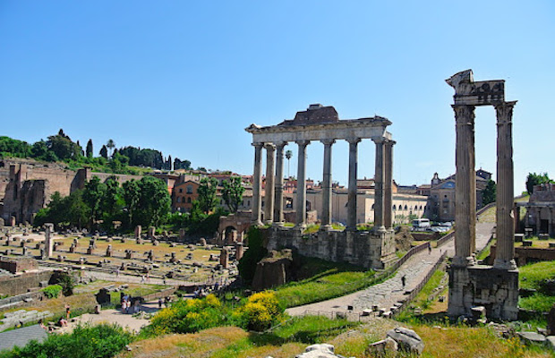

Rzym
Rzym jest stolicą Republiki Włoskiej i największym jej miastem. Liczy ok. 2,8 mln mieszkańców. Jest także centrum administracyjnym prowincji Rzym i regionu Lacjum (wł. Lazio). Leży na zachodnim skraju środkowej Italii, nad rzeką Tyber (wł. fiume Tevere). Jest jednym z najczęściej odwiedzanych miast na świecie i największą atrakcją turystyczną Włoch.
Bazylika świętego Piotra

Bazylika św. Piotra (wł. Basilica di San Pietro in Vaticano) to bez wątpienia jeden z najpiękniejszych kościołów świata. Spacerując pomiędzy nawami i kaplicami możemy poczuć się tak, jakbyśmy zwiedzali znamienite muzeum sztuki - świątynię ozdabiają dzieła takich mistrzów jak Gianlorenzo Bernini, Michał Anioł czy Antonio Canova.
W XVI wieku stara bazylika Konstantyna była w opłakanym stanie. Dlatego też papież - mecenas Juliusz II podjął decyzję o jej zburzeniu i wystawieniu w tym miejscu godnego kościoła. Budowę nadzorowali między innymi: Donato Bramante, Rafael Santi, Michał Anioł, Domenico Fontana i Carlo Maderno. Kościół konsekrował w 1626 roku papież Urban VIII.
Plac świętego Piotra i charakterystyczna kolumnada są prawdopodobnie jednym z najłatwiej rozpoznawalnych miejsc na świecie. Na jego kształt składają się dwie figury geometryczne: trapez i elipsa. Całość otoczona jest kolumnadą z rzeźbami 140 świętych. Wśród nich znajdziemy jednego Polaka - świętego Jacka Odrowąża.
W Bazylice znajdują się groby wielu papieży - począwszy od świętego Piotra po ostatnich papieży m.in. św. Jana XXIII, św. Pawła VI, Jana Pawła I czy św. Jana Pawła II.
Muzea Watykańskie

Muzea Watykańskie to jedna z głównych atrakcji Watykanu. W budynku prezentowana jest ogromna kolekcja dzieł sztuki, które na przestrzeni wieków zgromadzili poszczególni papieże. Codziennie rano do Muzeów Watykańskich ustawia się długa kolejka turystów, a sposobem na jej uniknięcie jest kupienie biletu wstępu online z wejściem o konkretnej godzinie.
Wielu turystów wybiera się do Muzeów Watykańskich w jednym celu - żeby zobaczyć słynną Kaplicę Sykstyńską ozdobioną malowidłami Michała Anioła oraz innych mistrzów, w której po śmierci lub ustąpieniu papieża organizowane jest konklawe (zgromadzenie mające na celu wybranie nowej głowy kościoła). Ta znana na całym świecie budowla powstała między 1475 a 1483 rokiem podczas pontyfikatu Sykstusa IV. To właśnie od imienia papieża wywodzi się nazwa kaplicy i warto to zapamiętać.
Koloseum

Amfiteatr Flawiuszów, Koloseum (Amphitheatrum Flavium, Colosseum) to potężna budowla przeznaczona na igrzyska, które obejmowały zapasy, walki gladiatorów, walki z dzikimi zwierzętami oraz bitwy morskie, tzw. naumachie. Tradycja mówi iż w Koloseum mordowano chrześcijan, co upamiętniono krzyżem wewnątrz budowli.
Amfiteatr Flawiuszów został wzniesiony na planie owalu zbliżonego kształtem do elipsy; jego oś dłuższa ma 188 m, oś krótsza 156 m. Mierzy w obwodzie 527 m i ma dziś około 48,5 m wysokości (w przeszłości jego wysokość osiągała 52 m). Składał się z 4 kondygnacji sklepionych krzyżowo, na których biegną rzędy korytarzy i schodów.
Koloseum przetrwało wieki, ale w jego wnętrzu niewiele pozostało z oryginalnych elementów zdobiących trybuny i ściany. W 217 r. arena i najwyższe kondygnacje uległy zniszczeniu w wyniku ogromnego pożaru; w kolejnych latach trzęsienia ziemi i mniejsze pożary kolejno niszczyły poszczególne partie amfiteatru.
Fontanna di Trevi

Fontanna Trevi to jedno z najbardziej romantycznych miejsc Rzymu.
Wśród wąskich uliczek bezustannie zatłoczonego centrum Wiecznego Miasta znajduje się mały placyk z ogromną fontanną.
Fontanna Trevi to jedna z najpiękniejszych i najbardziej imponujących włoskich budowli wodnych. Ten niezwykły, barokowy wodotrysk mieści się na całej jednej ścianie pałacu Poli i ma 20 metrów szerokości oraz 26 metrów wysokości. Miejsce to jest pełne uroku nie tylko dzięki swym rozmiarom, ale także dzięki refleksom słonecznym na falującej tafli wody w niecce basenowej.
Bazylika świętego Pawła za Murami

Bazylika Świętego Pawła za Murami (Basilica di San Paolo fuori le Mura) jest jedną z pięciu głównych bazylik Rzymu. Założona przez cesarza Konstantyna w IV wieku, Basilica di San Paolo to miejsce pochówku świętego Pawła Apostoła.
Bazylika św. Pawła jest drugą co do wielkości bazyliką w Rzymie. Po obu stronach nawy głównej biegną dwie nawy boczne, oddzielone 80 ogromnymi granitowymi kolumnami.
Dość proste, przestronne wnętrze, wysokie kolumny, piękne mozaiki na łuku i absydzie, ładna marmurowa posadzka sprawiają, że kościół budzi zachwyt.
Wokół naw i transeptu, tuż poniżej poziomu okien znajdują się portrety papieży – począwszy do św. Piotra aż po obecnego papieża Franciszka.
Zamek świętego Anioła

Zamek Świętego Anioła (wł. Castel Sant’Angelo) to jeden z największych symboli Rzymu i jednocześnie jedna z tych budowli, która spina ze sobą antyczną historię miasta z czasami nowożytnymi. Tu zobaczycie 19 wieków historii na 6 poziomach budowli: grobowiec cesarski, twierdzę papieską, apartamenty papieskie, skarbiec, więzienie i piękny taras widokowy na cały Rzym, który jest
ukoronowaniem zwiedzania fortecy, tuż poniżej figury św. Michała Archanioła, skąd można podziwiać wspaniałą panoramę Rzymu i bazyliki św. Piotra w Watykanie.
Forum Romanum

Forum Romanum - dosłownie "rynek rzymski" - to plac w starożytnym Rzymie, u stóp Kapitolu i Palatynu. Przez cały okres republiki było centrum życia religijno politycznego, a zarazem i ekonomicznego. Z chwilą upadku cesarstwa rzymskiego nastąpił schyłek świetności, do którego przyczyniło się trzęsienie ziemi w 851 r. Do obecnych czasów zachowały się jedynie ruiny starożytnych budowli, które jednak dają wyobrażenie o ich ogromie.